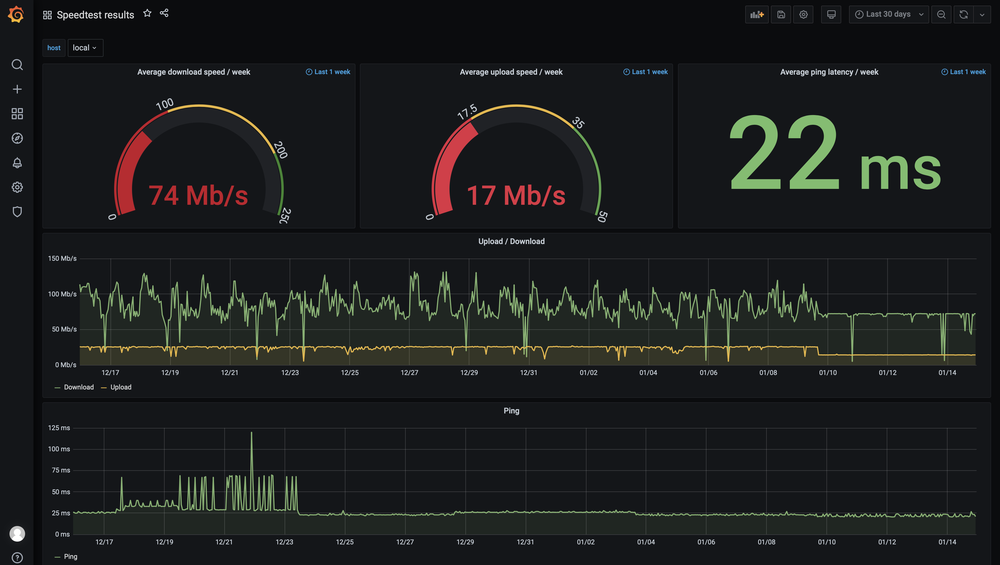

Hi!
Ich habe vor 2 Monaten einen Magenta Hybrid Vertrag abgeschlossen (150 Mb/s werden da angepriesen). Mir war schon im vornherein klar, diesen Wert nicht erreichen zu können, allerdings habe ich mir 90 Mb/s erhofft und die bekam ich auch zur überwiegenden Zeit geliefert.
Aber am 9.1.2021 um 17:30 hat sich daran etwas verändert:

Es sollte mit freien Auge erkennbar sein, dass sich hier plötzlich etwas verändert hat...
Quelle der Werte ist Speedtest.net, ich kann leider die API vom RTR Netztest nicht verwenden...
Speed ist nun maximal bei 74 Mb/s, dafür relativ konstant.
Konnte dieses Phänomen auch von jemand anderen beobachtet werden?
MfG
simonp
Hallo
@simonp
Das kann einige Gründe haben wie z.B:
-
DSL Geschwindigkeit wurde gesenkt (siehe im web interface deiner Hybrid Box)
-
Netz Auslastung wurde höher(mehr Kunden in der Mobilfunkzelle-shared Medium
Meistens trifft aber der 2 Punkt zu was jetzt in Zeiten von Homeoffice und co. nicht wirklich außergewöhnlich ist. Ich nehme mal an du führt den Speedtest über LAN bzw. WiFI 5 GHz durch? Trotzdem sehr gute Werte für Hybrid
Ja, teste über Lan.
Im Router nach zu sehn war eine sehr gute Idee
. Da hab ich dan die Erklärung gefunden: Der Bonding Tunnel war Down weil LTE mich rausgeschmissen hat.
Neustart vom Router und alles hat wieder funktioniert...
Also ist DSL bei mir wirklich sehr gut und konstant, hätte ich das auch einmal getestet haha
 .
.
DSL unterliegt nicht dem shared Medium ,du teilst dir die Bandbreite nicht mit anderen Kunden sowie bei LTE, daher ist es stabil.
{kind=link}